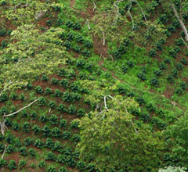
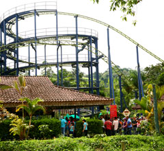

Cultivo de café

Caficultor
| Tabla 2. Beneficios de la declaratoria del Paisaje Cultural Cafetero como Patrimonio Mundial |
| Reconocimiento mundial del patrimonio cultural y natural de esta región cafetera colombiana. |
| Apropiación social del patrimonio cultural y natural. Identificación entre las poblaciones y su herencia cultural, natural y productiva. |
| Compromiso con la protección de su entorno (beneficios ambientales), movilización para su salvaguarda como paisaje vivo y asistencia e inversión internacional para su mantenimiento y protección. |
| Estímulo de prácticas amigables con el medio ambiente mediante mecanismos de gestión (procesos educativos, reformas normativas, etc.). |
| Beneficios económicos para la región gracias al incremento del turismo (aplicando normativas de manejo sostenible). |
| Desarrollo y consolidación de productos y servicios únicos y diferenciados para beneficio de los habitantes del paisaje. |

Parque del café
Rionegro - Quindío